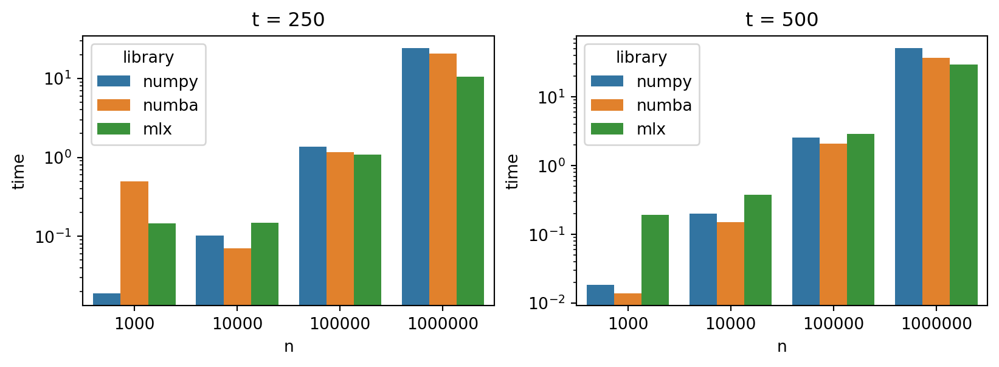

Speed up your scientific computing workflows with MLX
Python
Author
Vincent Grégoire, PhD, CFA
Published
March 22, 2024
Subscribe to newsletter
Thank you for Signing Up
The rapidly evolving landscape in machine learning (ML) tools and libraries sometimes offer positive spillovers for scientific computing and empirical finance research. One such innovation that has recently caught my attention is MLX, an array framework developed by Apple Machine Learning Research. Designed to leverage the power of Apple silicon (M1/M2/M3 chips), MLX is engineered to optimize machine learning workflows with remarkable efficiency. But could this library, with its suite of features tailored for ML research, also benefit workflows in empirical finance research and other scientific domains?
In this post, I explore the potential of MLX in scientific computing using a sample empirical finance research task.
Video tutorial
This post is also available as a video tutorial on YouTube.
What is MLX?
MLX emerges as a promising solution for researchers seeking to harness the capabilities of Apple silicon, using the combined power of the CPU and GPU. At its core, MLX is an array framework that prioritizes efficiency, flexibility, and user-friendly experience, characteristics that are increasingly demanded in the fast-paced world of scientific research. Here’s a summary of MLX’s key feature:
Familiar APIs Across Languages: MLX offers a Python API that mirrors NumPy, making the transition seamless for those already acquainted with Python’s scientific computing ecosystem. It also provides APIs specific for ML tasks that are designed to be intuitive and easy to use.
Composable Function Transformations: The library’s support for composable function transformations—encompassing automatic differentiation, automatic vectorization, and computation graph optimization simplifies the process of building complex models.
Lazy Computation and Dynamic Graph Construction: MLX’s approach to computation, characterized by laziness and dynamic graph construction, ensures that arrays are only materialized when necessary. This not only optimizes memory usage but also simplifies debugging and accelerates the iterative research process, as changes to the shapes of function arguments do not incur the penalty of slow compilations.
Multi-Device Support and Unified Memory: The framework’s ability to run operations across different devices (currently CPU and GPU) without requiring data transfers is a notable advantage. This unified memory model is a departure from conventional frameworks, promising significant efficiency gains and ease of use in a multi-device environment.
Sample problem
For this post, I will focus on a task that is commonplace in empirical finance research: simulating time series processes. My objective is to evaluate the performance and ease of use of MLX, a new array framework designed for machine learning research on Apple silicon, in comparison to more traditional approaches. To do this, I will contrast MLX against workflows based on NumPy and NumPy optimized with Numba.
Numba is a library that enhances the speed of Python code, particularly when working with NumPy arrays, through just-in-time (JIT) compilation. This means it compiles functions at runtime, significantly boosting their execution speed on the CPU. While NumPy does offer GPU support, it is limited to Nvidia GPUs, which are not available on Mac laptops. Therefore, our comparison will involve two primary workflows: one based on NumPy, another optimized with Numba for CPU execution, and finally, our workflow utilizing MLX.
AR(3)-GARCH(1,1) Process
The focus of my example will be on a simulation-based workflow where I simulate an AR(3)-GARCH(1,1) process multiple times. For those less familiar with time series analysis, AR(3) refers to a third-order autoregressive process, and GARCH(1,1) denotes a generalized autoregressive conditional heteroskedasticity process with one lag for both the autoregressive and moving average components. This combination is commonly used to model time series data exhibiting volatility clustering—a phenomenon often observed in financial markets.
To describe an AR(3)-GARCH(1,1) process, we need to define both the autoregressive and the volatility (GARCH) components of the model. Here’s how each component is mathematically represented:
AR(3) Component
The AR(3) (Autoregressive model of order 3) component models the value of a time series at a particular time as a linear combination of its three previous values, plus a constant term and a stochastic error term. The equation for the AR(3) model is:
\(y_t\) is the value of the time series at time \(t\),
\(c\) is a constant, which I set to 0 in my simulations,
\(\phi_1, \phi_2, \phi_3\) are the parameters of the model for each of the three lags,
\(\epsilon_t\) is the error term at time \(t\), which is assumed to be normally distributed with zero mean and variance \(\sigma_t^2\), i.e., \(\epsilon_t \sim N(0, \sigma_t^2)\).
GARCH(1,1) Component
The GARCH(1,1) (Generalized Autoregressive Conditional Heteroskedasticity model of order (1,1)) component models the variance of the error term (\(\sigma_t^2\)) as a function of its own past values and the past values of the squared error term (\(\epsilon_{t-1}^2\)). The equation for the GARCH(1,1) model is:
\(\sigma_t^2\) is the conditional variance (squared volatility) of the error term at time \(t\),
\(\alpha_0\) is a constant term (must be positive),
\(\alpha_1\) and \(\beta_1\) are parameters of the model that measure the impact of the previous period’s squared error and the previous period’s variance, respectively, on the current variance.
Combined AR(3)-GARCH(1,1) Model
In a combined AR(3)-GARCH(1,1) model, the \(\epsilon_t\) in the AR(3) component follows the conditional variance equation specified by the GARCH(1,1) model. This combination allows the model to capture both the autocorrelation in the mean of the series (via the AR component) and the changing volatility (via the GARCH component), which is particularly useful for financial time series that exhibit volatility clustering.
t-Statistic Calculation
For each simulated time series, we aim to compute the t-statistic to test the null hypothesis that the average return (i.e. the \alpha) in the sample is zero. The t-statistic is calculated using the formula:
\[
t = \frac{\bar{x} - \mu_0}{\text{SE}_{\text{White}}}
\]
where:
\(\bar{x}\) is the sample mean,
\(\mu_0\) is the population mean under the null hypothesis (in this case, 0),
\(\text{SE}_{\text{White}}\) the White standard error of the mean:
This process allows us to assess the capability of MLX in handling computational tasks typically performed with NumPy and see if MLX can offer any advantages, whether in terms of speed, ease of use, or compatibility with Apple silicon. For those interested in the technical specifics or who wish to follow along with the code, all relevant materials have been made available on GitHub.
Getting started with MLX
To install MLX, you can do so using your package manager of choice:
pip install mlx
poetry add mlx
conda install conda-forge::mlx
Then, you can import MLX in your Python script or Jupyter notebook:
import mlx.core as mx
And in most cases, what you will have to do is replace np. but mx. in your code. MLX works with mx.array objects which can be converted to NumPy array by passing them to the np.array() function. Conversely, you can convert a Numpy array to a MLX array using mx.array(). It is important to note that MLX arrays support 32-bit floats, while NumPy arrays support 64-bit floats by default. This is something to keep in mind when working with MLX.
Simulation with MLX
My simulation code is defined as four functions, plus one additional function to calculate the t-statistic:
simulate_shocks() This function generates the error terms \(\epsilon_t\) for the AR(3)-GARCH(1,1) process.
garch_shocks() This function computes the conditional variance \(\sigma_t^2\) using the GARCH(1,1) model.
ar() This function computes the AR(3) component of the model.
simulate_ar3_garch11() This function combines the AR(3) and GARCH(1,1) components to simulate the time series.
compute_tstats_white() This function calculates the t-statistic for each simulated time series.
The full code is available on GitHub. To see the (very few) changes needed to adapt the code to MLX, let’s look at various functions:
def compute_tstats_white(x: np.ndarray) -> np.ndarray: _, m = x.shape means = np.mean(x, axis=1) std_devs = np.std(x, axis=1, ddof=m -1)return means / std_devs * m
def compute_tstats_white(x: mx.array) -> mx.array: n, m = x.shape means = mx.mean(x, axis=1) std_devs = mx.sqrt(mx.sum(mx.square(x - means.reshape(n, 1)), axis=1))return means / std_devs * m
1
std() doesn’t exist in MLX, so I have to compute it manually.
@njit(parallel=True)def compute_means(x: np.ndarray) -> np.ndarray: n, m = x.shape means = np.empty(n)for i in prange(n): means[i] = np.mean(x[i, :])return means@njit(parallel=True)def compute_std_devs_demeaned(x: np.ndarray) -> np.ndarray: n, m = x.shape std_devs = np.empty(n)for i in prange(n): std_devs[i] = np.sqrt(np.sum(x[i, :] **2))return std_devs@njit(parallel=True)def compute_tstats_white(x: np.ndarray) -> np.ndarray: n, m = x.shape means = compute_means(x) std_devs = compute_std_devs_demeaned(x - means.reshape((n, 1)))return means / std_devs * m
Benchmark results
To compare the performance of MLX with NumPy and NumPy optimized with Numba, I ran simulations for different numbers of time series N (from 1,000 to 1,000,000) and time periods T (250 and 500.) on my MacBook Pro M3 Max with 64 GB of RAM. I measured the execution time for each library and configuration and recorded the results in a CSV file. The results from the benchmark are visualized in the following plots:
Code
import pandas as pdimport matplotlib.pyplot as pltimport seaborn as snsplt.style.use('seaborn-v0_8-pastel')df = pd.read_csv("times.csv")df_250 = df[df['t'] ==250]df_500 = df[df['t'] ==500]fig, ax = plt.subplots(1, 2, figsize=(9, 3), sharey=True)sns.barplot(x='n', y='time', data=df_250, ax=ax[0], hue='library')ax[0].set_yscale("log")ax[0].set_title('t = 250')ax[0].set_ylabel('Execution Time (s)')ax[0].set_xlabel('Number of Simulations')ax[0].legend(title='Library')sns.barplot(x='n', y='time', data=df_500, ax=ax[1], hue='library')ax[1].set_yscale("log")ax[1].set_title('t = 500')ax[0].set_ylabel('Execution Time (s)')ax[1].set_xlabel('Number of Simulations')ax[0].legend(title='Library')
/Users/vincentgregoire/Documents/GitHub/vcf/website/.venv/lib/python3.12/site-packages/seaborn/_base.py:948: FutureWarning: When grouping with a length-1 list-like, you will need to pass a length-1 tuple to get_group in a future version of pandas. Pass `(name,)` instead of `name` to silence this warning.
data_subset = grouped_data.get_group(pd_key)
/Users/vincentgregoire/Documents/GitHub/vcf/website/.venv/lib/python3.12/site-packages/seaborn/_base.py:948: FutureWarning: When grouping with a length-1 list-like, you will need to pass a length-1 tuple to get_group in a future version of pandas. Pass `(name,)` instead of `name` to silence this warning.
data_subset = grouped_data.get_group(pd_key)
/Users/vincentgregoire/Documents/GitHub/vcf/website/.venv/lib/python3.12/site-packages/seaborn/_base.py:948: FutureWarning: When grouping with a length-1 list-like, you will need to pass a length-1 tuple to get_group in a future version of pandas. Pass `(name,)` instead of `name` to silence this warning.
data_subset = grouped_data.get_group(pd_key)
/Users/vincentgregoire/Documents/GitHub/vcf/website/.venv/lib/python3.12/site-packages/seaborn/_base.py:948: FutureWarning: When grouping with a length-1 list-like, you will need to pass a length-1 tuple to get_group in a future version of pandas. Pass `(name,)` instead of `name` to silence this warning.
data_subset = grouped_data.get_group(pd_key)
/Users/vincentgregoire/Documents/GitHub/vcf/website/.venv/lib/python3.12/site-packages/seaborn/_base.py:948: FutureWarning: When grouping with a length-1 list-like, you will need to pass a length-1 tuple to get_group in a future version of pandas. Pass `(name,)` instead of `name` to silence this warning.
data_subset = grouped_data.get_group(pd_key)
/Users/vincentgregoire/Documents/GitHub/vcf/website/.venv/lib/python3.12/site-packages/seaborn/_base.py:948: FutureWarning: When grouping with a length-1 list-like, you will need to pass a length-1 tuple to get_group in a future version of pandas. Pass `(name,)` instead of `name` to silence this warning.
data_subset = grouped_data.get_group(pd_key)

Execution Time (shorter is better)
As we can see, there is a performance gain for the heavier workloads when using MLX compared to NumPy and NumPy optimized with Numba. This suggests that MLX is well-suited for handling large-scale scientific computing tasks. It is however important to keep in mind that the results may vary depending on the specific task and the hardware being used. Another thing to consider is that while the MLX code was running, CPU usage remained low, which suggests that you could potentially run GPU-bound tasks in parallel with CPU-bound tasks without much interference.
Final thoughts
This is certainly interesting and I am looking forward to exploring MLX further in the context of empirical finance research and other scientific computing tasks. However, while there are benefits to using MLX for heavier workloads, results will vary depending on the specific task and the hardware being used. Keep in mind that MLX is still in its early stages, and its feature set is not as extensive as that of established libraries like NumPy and PyTorch. This may limit its applicability to certain scientific computing workflows, especially those that rely heavily on specialized functionality. I also mean that MLX will likely improve over time as the library matures and more features are added, so I will be keeping an eye on its development.